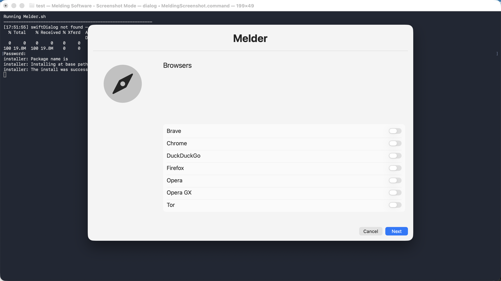

swiftDialog
Melder uses swiftDialog for its GUI. If it is missing, the script queries the swiftDialog GitHub release API, downloads a .pkg, and installs it.
macOS Setup & App Installer
Melder is a multi-page macOS setup interface built around swiftDialog and Homebrew. It lets the user choose applications to install, search for additional Homebrew casks, and apply selected macOS tweaks.
Screenshot

Installation
Copy and paste this command into Terminal to install the Melding Software Mac scripts.
After reopening Terminal, type MeldingSoftware anytime to load the list.
curl -fsSL https://raw.githubusercontent.com/MeldingSoftware/Scripts/main/Mac/install.sh | bash
Because this command downloads and immediately runs a shell installer, you can review install.sh in the GitHub repository before executing it. Individual scripts may also request permissions, administrator access, Keychain authorization, Full Disk Access, or other macOS approvals depending on what the selected tool needs.
Documentation
Melder uses swiftDialog for its GUI. If it is missing, the script queries the swiftDialog GitHub release API, downloads a .pkg, and installs it.
For macOS 15 or later it uses the latest release; for macOS 14 or earlier the script targets swiftDialog v2.5.6.
Homebrew is installed with the official installer only if a selected operation needs it and brew is unavailable.
An optional Terminal search loop lets the user search Homebrew casks, view matches, install selected results, and continue searching until done.
Documentation
Brave, Chrome, DuckDuckGo, Firefox, Opera, Opera GX, and Tor.
Acrobat Reader, AppCleaner, Evernote, Grammarly, LibreOffice, Microsoft Office, Obsidian, OpenOffice, Raycast, and Visual Studio Code.
Amazon Music, Audacity, CapCut, HandBrake, Kodi, Lightworks, Plex, Spotify, and VLC.
Discord, Slack, Teams, Telegram, WhatsApp, and Zoom.
Battle.net, EA Desktop, Epic Games Launcher, League of Legends, Minecraft Launcher, RetroArch, Roblox, and Steam.
Cinebench, coconutBattery, EtreCheck, Geekbench, and Wireshark.
1Password, Bitwarden, BlockBlock, KnockKnock, LuLu, Malwarebytes, NordVPN, ProtonVPN, and VeraCrypt.
Documentation
If Steam is selected on arm64 and Rosetta 2 is not detected, Melder attempts to install Rosetta through softwareupdate before installing Steam.
Failed app/cask operations are accumulated so the script can track unsuccessful selections rather than silently ignoring them.
Documentation
Can show file extensions, Finder path bar, and Finder status bar.
Can move screenshots to ~/Pictures/Screenshots, enable Dock auto-hide, and disable recent apps in the Dock.
Can enable tap-to-click.
Can enable the macOS Application Firewall, enable automatic update scheduling, and install macOS updates.
Rectangle and iTerm2 are offered from the tweaks page as Homebrew cask installs.
FAQ
No. The user chooses applications and tweaks before Melder runs them.
Homebrew is used for app/cask installs and can be installed by Melder when needed.
swiftDialog provides the graphical selection interface.
Yes. Melder checks for Rosetta 2 and can install it before Steam.
Yes. The optional Search page opens a Homebrew cask search/install loop in Terminal.